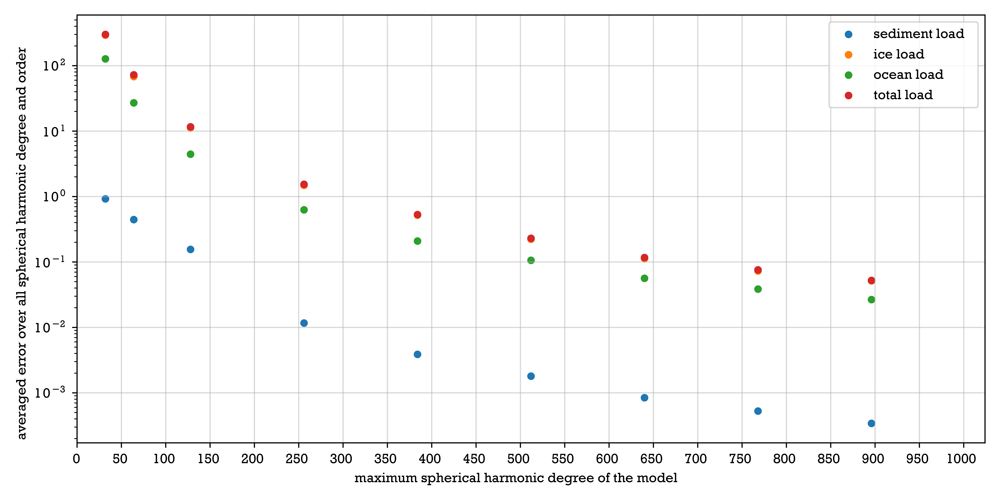
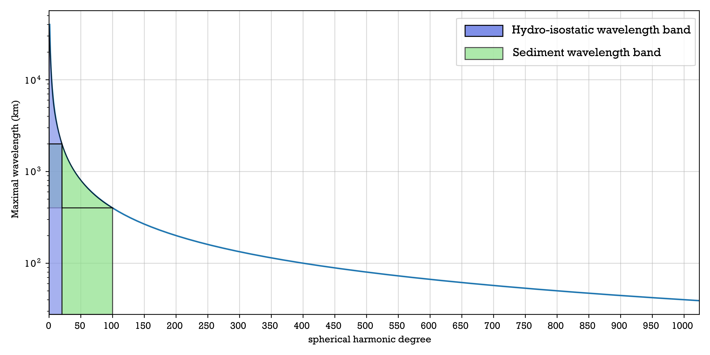
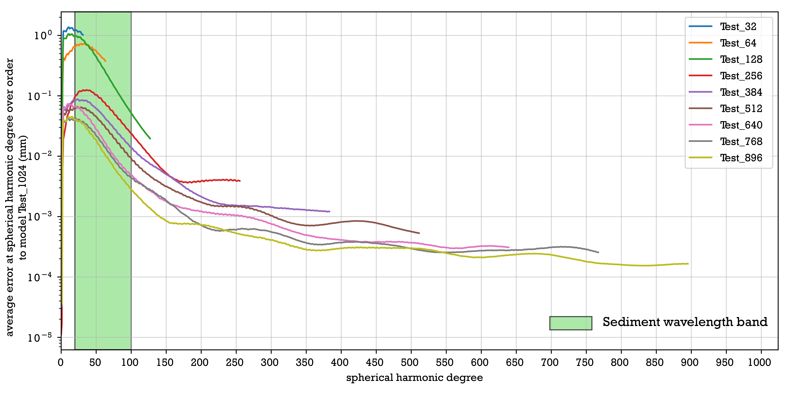
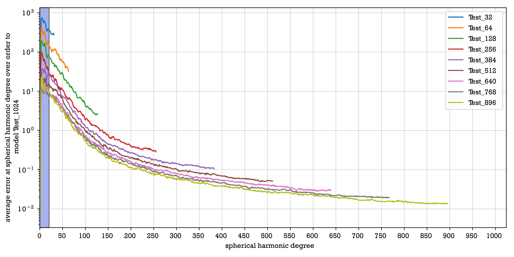
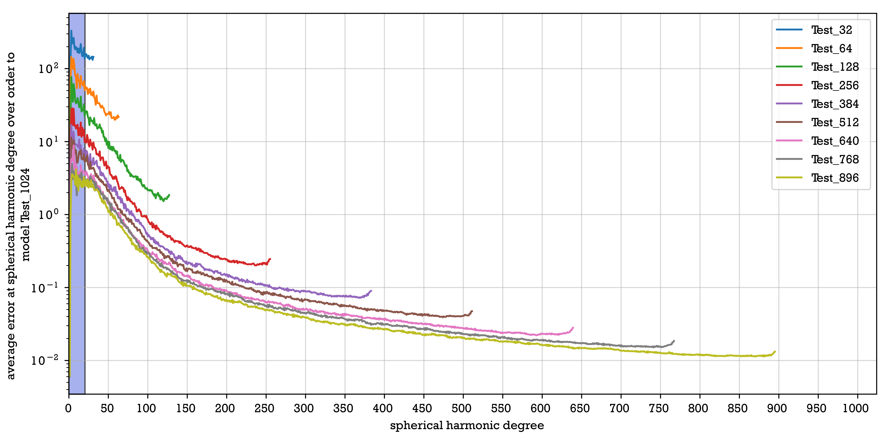
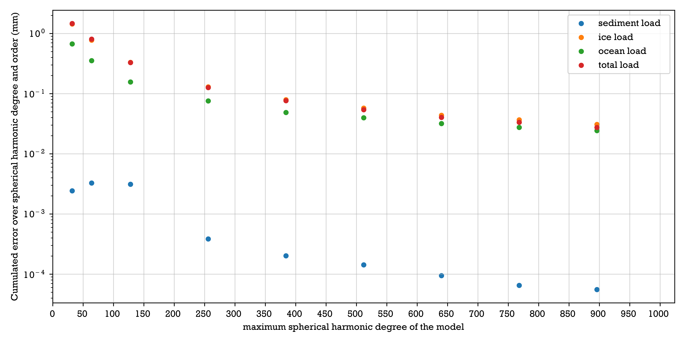

Scaling effect
Here we present a bench of test run on the code with different spatial and temporal resolution, to determine the minimal resolution needed for an application. These test are performed using VM5a Earth model and its associated ice load ICE6G [Peltier et al., 2015]. The sediment loading we used the sediment loading model developped for the Ayeyarwady delta (Henry et al., in prep).
Spatial resolution effect
Total deformation
We tested 10 possible maximum spherical harmonics degree (as discussed before, this degree define the spatial resolution of the model), 32, 64, 128, 256, 384, 512, 640, 768, 896, 1024. The results are compared with the highest resolution, 1024. The systemic exploration highlight a general decrease of error with higher spherical harmonics degree. We also observe a slope break between spherical harmonics degree 128 and 256 that can be considered to be a threshold effect. This break is less pronounced in the case on sediment load and is located around 256 and 384, reasons will be explored later.
Spherical harmonics coefficients are associated to a function of small wavelength if you consider a high spherical harmonic degree. The spherical harmonics functions are dividing a sphere in parts equals to the spherical harmonic degree, therefore at minimum the wavelength is \(\frac{P}{deg}\). Where \(P\) is the Earth perimeter here 40 000 km and \(deg\) is the considered spherical harmonics degree. To each type of load (sediment, ocean, ice), we define a spherical harmonic degree range where we can expect to find the wavelength of the deformation induced.
Effect on sediment loading
Wavelength of deformation induced by sediment loading is between 2000 km and 400 km. This corresponds to spherical harmonics degree between 20 and 100. We consider hereafter a good model to reduce the error in this band. In accordance with the average error over spherical degree, the error is globally decreasing if we consider a model of higher spherical degree. In the sediment wavelength band, we can observe that the highest error is inside up to maximum degree 384. In the case of sediment, maximum error does not follow the general decrease, as for Test 64 and Test 128.
We consider that up to spherical harmonic degree 384 sediment load is too small to be well taken into account in the model. This is expressed by the maximum error located inside the wavelength band of sediment. The general decrease in the error decoupled from the maximum error is explained by the inclusion of smaller degrees with a smaller error, compensating for the maximum error. We recommend to use at least 384 up to 512 maximum degree in the case of sediment modeling. Considering these degree error at maximum is between 0.1 and 0.01 mm.
Effect on ice loading
Wavelength of deformation induced by ice is between 2000 and 30 000 km. This corresponds to spherical harmonics degree between 1 and 20. We observe a general decrease, following the general decrease described before. We observed a higher error in the ice wavelength band for model Test_896 and model Test_768 which does not follow the general decrease.
Higher error for higher degree related to ice loading can be explained by convergence uncertainty. At high degree, the resolution does not control the error but the quality of the convergence parameters. The ice loading induced deformation error is directly related to the degree, and we can expect that a threshold is reach between 128 and 256. This error reach at maximum 0.1 m and with higher degree can be reduced to less than 1 cm.
Effect on ocean loading
Wavelength of deformation induced by ocean loading is the same as for ice loading, the spherical harmonic band is therefore between 1 and 20. We observe a general decrease as for the mean error. For the last degree of each model, the error increase slightly. For higher degree, the error become a plateau for model Test 768 and Test 896.
Ocean modeling include shoreline migration which is affecting small spherical harmonics degree. We can link the increase of error for smaller degree to this phenomenon. The error plateau is explained by a better modeling of ocean load variations at ice edge due to a better resolution. Generally the error related to ocean loading can be explained by the higher resolution of the model wich give the possibility to better model the shoreline and the limit ice-ocean. We have the same conclusion then for ice, the model have a good error with higher degree than 256. This is related to error around 2 cm at maximum but we can decrease the error to 3 mm for maximum degree as 896. We can also expect that the plateau reach for small spherical harmonic degree, is a good modelisation of shoreline ocean relation and can be reach for model at reasolution of 768 or 896. Therefore, working close to ice sheet need a maximum degree of model above 768. Also when working at shoreline, depending on the studied wavelength of deformation you are focusing on, if under 100 km wavelength you nedd model run with maximum degree higher than 512.
Conclusion : depending on the process you are working on you should choose the model maximum degree as follows. For sediment modeling, use maximum degree higher than 384. If you are working on shoreline and on wavelength smaller than 100 km use maximum degree model of 512. For Glacio-Hydrostatic modeling you can use maximum degree higher than 256, but if working at ice sheet edge, you should consider using spherical harmonic degree higher than 768.
Differential diformation
We have the same evolution when considering the differential deformation over time, only the error value is much smaller. For sediment \(10^{-5}\) mm to \(10^{-6}\). For ice, \(10^{-2}\) to \(10^{-3}\). For ocean, \(10^{-2}\) to \(10^{-3}\), and the plateau is more pronounced. Here we won’t consider the simple error associated to the maximum degree of model but the error multiplied by this maximum degree. This should represent the true error at maximum on the result, and not for each spherical harmonic function. This highlight the error slope break around 256 maximum degree for all parameters and also that error are at least 0.1 mm for ocean, ice and total load and \(10^{-3}\) to \(10^{-4}\) mm for sediment.
Conclusion : This consideration lead us to consider that differential or total deformation does not affect the error distribution over spherical harmonic degree. The differential deformation highlight the threshold effect of spherical harmonics maximum degree 256. By our exploration of total deformation error, we highlight a more complex error distribution where this threshold depends on to observe load source and its location. As all deformation are interdependent and dependent to the total deformation, results depends on the quality of deformation model, and we strongly encourage to use the different threshold proposed in the section above.